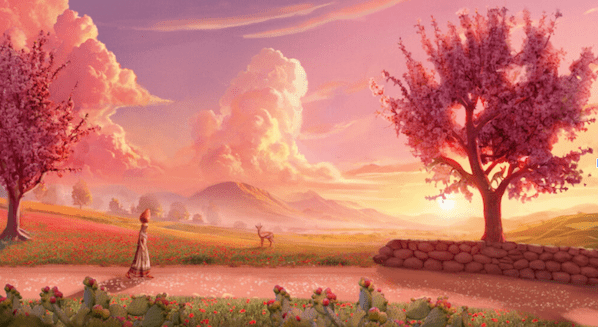

A professional network for supporting Palestinian game creators.
New Coalition Of Over 50 Games Industry Professional Pledge Support To Palestinian Creators, Back Palestinian-Made Dreams On A Pillow
Palestinian Voices in Games is proud to announce its launch as a professional network dedicated to empowering current and emerging Palestinian game developers.
This self-organized coalition of international game studios, curators, and event organizers aims to combat the underrepresentation and dehumanization of Palestinians by offering direct professional support.
More than 50 industry professionals from different disciplines have volunteered to help Palestinian game developers and their games. Currently, 4 Palestinian-led projects are receiving support, mentorship, and volunteer work from Palestinian Voices in Games.
By Palestinian game developer Rasheed Abueideh, creator of Liyla and the Shadows of War. Many talented artists from our network are volunteering their work hours to help bring this project to life.
Support this project:
By comic artist Iasmin Omar Ata, also known as Delta. Being 2 is a point & click visual novel set in a futuristic Palestinian space-colony. It is a sequel to their previous game, Being, an abstract adventure game about Palestinian life during the past century, ranging from perpetual grief to enduring hope.
Iasmin is currently working on the first prototype of the game and is looking for support from game producers and in setting up crowdfunding.
By Yusra. Yusra is a designer and independent researcher with an interest in moral psychology and decision-making. She is currently developing RiYafa, a game that combines testimony and symbolism to tell the story of her family and community based in the West Bank.
The game is set in a dark, underwater world that players will have to explore and find their way through. As they navigate these waters, they will discover testimonies from Palestinians and see how their land is still being stolen and colonized today.
Follow RiYafa's journey:
By Yasmine Batniji, also known as Gabbah Baya. Travel to the year 2048 and play as a memory keeper in the reclaimed and rebuilt Gaza City. You will be tasked with tracing echoes of the current war at the renovated Al-Ahli hospital.
Yasmine is working to complete a vertical slice and is currently looking for financial support—any sum helps!
Support this project:
International professionals pledge hours to mentor, advise, or otherwise support selected Palestinian projects. Volunteers of all disciplines, both in and around game development, are needed and welcome!
We are currently brainstorming ways to connect creators with prospective financing sources, from donations of all sizes to investors and publishers.
Want to sign up to volunteer your time or offer financial support?
Are you a Palestinian game creator looking for support?
Have questions? Want to learn more? Reach out!
For more information, please visit palestinian-voices-in-games.com. We call on fellow industry professionals and organizations to help us stand against the ongoing dehumanization of Palestinians by directly supporting and empowering their creative voices.